Was ist das
Der Ingenieur ist ein Programm auf deinem PC. Er liest die Daten aus dem Spiel und spricht über dein Headset mit dir: er warnt vor schnelleren Autos, sagt dir, wann du an die Box musst, was beim Stopp gewechselt wird und wo du Zeit verlierst. Fragen beantwortet er per Stimme – Taste am Lenkrad halten, sprechen, loslassen.
Die Pit Wall ist eine Webseite (PC oder Handy). Das ganze Team sieht live den Zustand des Autos, die Gegner, das Wetter und den Stintplan und kann dem Fahrer Nachrichten schicken, die der Ingenieur vorliest.
Funktioniert auf jeder Strecke, mit jedem Auto und jeder Klasse in Le Mans Ultimate und Assetto Corsa. Du kannst allein (Modus Solo) oder im Team fahren.
Was du brauchst
- Windows 10 oder 11 und Le Mans Ultimate oder Assetto Corsa (Steam; für Assetto Corsa wird Custom Shaders Patch empfohlen – Abschnitt Assetto Corsa).
- Ein Headset mit Mikrofon und eine freie Taste am Lenkrad (oder eine Taste auf der Tastatur).
- Internet (Stimme, Spracherkennung und Pit Wall funktionieren online).
- Einen kostenlosen Groq-Schlüssel – ohne ihn funktioniert die KI nicht (bessere Spracherkennung, KI-Antworten, Übersetzung seltener Meldungen); wie du ihn bekommst: KI.
Installation (2 Minuten)
- Lade das Installationsprogramm
PitWallCrew_Setup_….exeaus dem FR-Mods-Beitrag auf Patreon herunter (öffentlicher Beitrag – kostenlose Demo; die Vollversion schaltest du in der App mit Mit Patreon anmelden frei – sie lädt sich selbst, deine Einstellungen bleiben). - Starte die heruntergeladene Datei. Das Installationsprogramm ist noch nicht digital signiert, deshalb kann Windows „Der Computer wurde durch Windows geschützt“ anzeigen – klicke auf Weitere Informationen → Trotzdem ausführen.
- Wähle im Installationsprogramm die Sprache (das Programm übernimmt sie; Spanisch, Italienisch und Dänisch wählst du später in der App: Ton & Sprache → Język / Language), dann OK, Weiter und Installieren. Die Installation dauert etwa eine Minute, lädt nichts herunter (Python ist dabei) und braucht keine Administratorrechte.
Programm und Daten liegen danach in
Dokumente\Pit Wall Crew. Die Verknüpfungen Pit Wall Crew auf dem Desktop und im Startmenü kannst du abwählen. Am Ende wählst du, ob die App, das Sprach-Tutorial und die Seite der Vollversion auf Patreon starten sollen, und klickst auf Fertig. - Die App öffnet sich in der gewählten Sprache, daneben das Fenster Erste Schritte – geh es der Reihe nach durch (bei jedem Punkt gibt es Öffnen):
- Team: oben Neues Team erstellen… (erste Person) oder Teamcode und Passwort von deinen Teamkollegen; dann dein Name – ein neuer Name wird beim Speichern zu den Fahrern des Teams hinzugefügt; allein – Modus Solo.
- Mikrofon und Taste: Mikrofon wählen (der Balken bewegt sich beim Sprechen), Festlegen: Taste drücken… klicken und die Taste am Lenkrad drücken.
- Ton & Sprache: Stimme des Ingenieurs wählen und ▶ Anhören klicken.
- Groq-Schlüssel (kostenlos, für die KI): so bekommst du ihn → Erweitert → Eigener Groq-Schlüssel → Schlüssel prüfen.
- Patreon: auf der Seite Renningenieur Mit Patreon anmelden – so bekommst du Updates.
- Speichern und Ingenieur-Modul neu starten klicken.
- In LMU einmalig: Settings → Gameplay → Enable Plugins = ON (ohne das sieht das Programm die Spieldaten nicht; Assetto Corsa: Abschnitt Assetto Corsa). Fahr raus, halte die Taste und frag z. B. „wie viel Sprit?“.
Alte Installation aus dem Zip (INSTALL.bat)? Starte das neue Installationsprogramm. Wurde das Programm nach Dokumente\Pit Wall Crew entpackt, bleiben deine Einstellungen automatisch erhalten.
Lag es in einem anderen Ordner, kopiere config.toml und den Ordner data aus dem alten Programmordner nach Dokumente\Pit Wall Crew\Program (oder geh das Fenster „Erste Schritte“ einfach noch einmal durch).
Eine ältere Installation mit einem anderen Python als 3.12 zeigt nach einem Update eine Meldung, dass sie mit dem neuen Installationsprogramm installiert werden muss.
Sprach-Tutorial (1–2 Minuten): beim ersten Start führt dich der Ingenieur durch 5 Schritte – Funkcheck, „wie viel Sprit habe ich?“, „wer ist hinter mir?“, zweimal kurz die Taste, „Ruhe“. Du siehst sofort, ob Mikrofon und Taste funktionieren. Startet erst, wenn eine Sprechtaste zugewiesen ist (oder du sie einmal gedrückt hast) und das Mikrofon ein Signal liefert; nie während eines Rennens. Überspringen: „Tutorial überspringen“ (oder am Ende der Installation abwählen); erneut: Hilfe → Anleitung → Sprach-Tutorial.
Deinstallieren: Windows-Einstellungen → Apps → Pit Wall Crew → Deinstallieren (oder Startmenü → Pit Wall Crew entfernen). Das entfernt das Programm; deine Einstellungen und Aufnahmen (config.toml, die Ordner data und recordings in Dokumente\Pit Wall Crew\Program) bleiben – um alles zu entfernen, lösch danach den Ordner Dokumente\Pit Wall Crew.
Das App-Fenster
Das Symbol Pit Wall Crew öffnet die App. Der Ingenieur startet von selbst und beginnt zu sprechen, sobald du das Spiel startest und auf die Strecke fährst. Das Design ☾ Dunkel / ☀ Hell wechselst du unten in der linken Leiste (sofort, ohne Neustart). Runden- und Sektorzeiten farbig wie auf der Pit Wall: lila – Klassenbestzeit, grün – deine Bestzeit, gelb – langsamer.
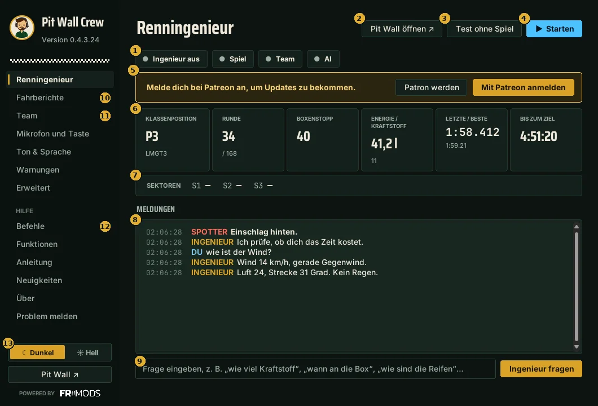
- Status: ob der Ingenieur läuft, das Spiel sieht („Du fährst“ oder Zuschauer, wenn ein Teamkollege fährt), Team- und KI-Verbindung. Grün = OK.
- Pit Wall öffnen – die Teamseite im Browser, gleich beim Team der App angemeldet (ohne Passworteingabe).
- Test ohne Spiel – ein simuliertes Rennen. Prüfe Stimme, Mikrofon und Pit Wall, ohne LMU zu starten.
- Starten / Stopp des Ingenieurs.
- Patreon – melde dich an, um Updates zu bekommen. Danach bleibt nur „Von Patreon abmelden“.
- Wichtigste Zahlen: Position, Runde, Runden bis zum Stopp, Energie oder Kraftstoff, Rundenzeiten, Zeit bis ins Ziel.
- Sektoren – S1–S3-Zeiten der letzten Runde und der Rückstand auf deine beste Runde (in Klammern der Sektor, in dem du am meisten verlierst).
- Meldungen – alles, was der Ingenieur gesagt hat, deine Fragen und Nachrichten des Teams. Rot = dringend.
- Fragefeld – tippe eine Frage, statt zu sprechen.
- Fahrberichte – Berichte nach Stints und Rennen, auch der laufende Stint live (Beschreibung unten, unter „Stint-Zusammenfassung“).
- Einstellungen – Team, Mikrofon, Stimme, Warnungen (siehe unten).
- Hilfe – Befehle, Funktionen, Anleitung (auch Erste Schritte), Änderungen, Über und Problem melden.
- ☾ Dunkel / ☀ Hell – Fensterdesign. Pit Wall – wie Knopf 2, von jeder Seite der App.
Fahrberichte
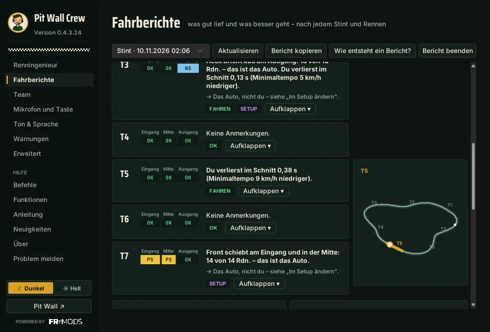
Einstellungen
Nach jeder Änderung auf Speichern und Ingenieur-Modul neu starten klicken (unten rechts).
Team
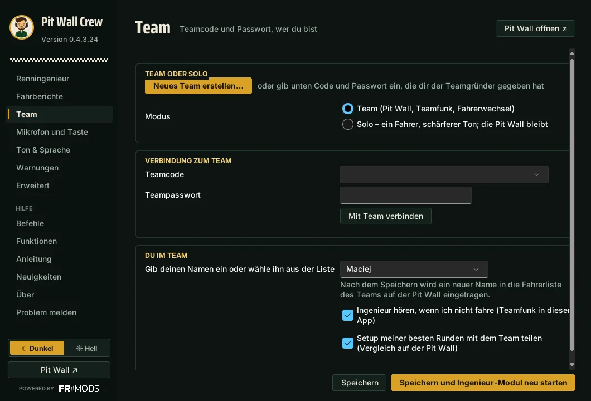
- Solo – du fährst allein: sonst nichts einzutragen. Die Pit Wall funktioniert trotzdem als deine Live-Ansicht.
- Team – eine Person klickt Neues Team erstellen… (Name und Passwort) und bekommt einen 6-stelligen Teamcode. Die anderen geben Code und Passwort ein, klicken Mit Team verbinden und wählen, wer sie sind.
- Das Feld Teamcode listet die Teams, mit denen dieser Computer verbunden war (nur Codes und Namen, keine Passwörter). Auswählen, Passwort dieses Teams eingeben und speichern. Die Pit Wall im Browser merkt sich die Codes auch: beim Anmelden und im Tab Team („Andere Teams auf diesem Gerät“).
- Code und Passwort nur privat weitergeben – wer sie kennt, sieht den Zustand des Autos und kann dem Fahrer schreiben.
- Ingenieur hören, wenn ich nicht fahre – wenn ein Teamkollege fährt, hörst du seinen Ingenieur (Teamfunk).
- Setup meiner besten Runden mit dem Team teilen – das Setup aus dem Spiel geht mit deiner besten Runde in die Team-Datenbank; die Pit Wall zeigt Setup-Unterschiede auf der Vergleichskarte. Abwählen, wenn du es nicht teilen willst.
- Runden auf diesem Computer (Erweitert) – das Programm speichert jede Runde auf der Festplatte und löscht nichts von selbst; Schaltfläche Runden älter als 180 Tage löschen. Runden älter als 14 Tage holt die Pit Wall von hier, wenn jemand sie auswählt. Ohne Internet gefahrene Runden schickt das Programm, sobald die Verbindung zurück ist.
Mikrofon und Taste
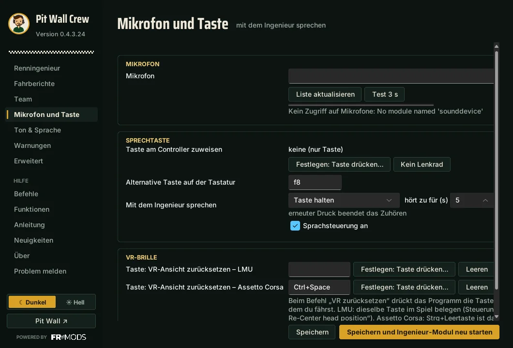
- Mikrofon wählen und Test 3 s klicken – etwas sagen und prüfen, ob sich der Pegel bewegt.
- Festlegen: Taste drücken… und die Taste am Lenkrad drücken, mit der du sprechen willst (jede Taste geht, auch MOZA-Tasten mit Nummern über 32). Eine Tastaturtaste geht auch. Reagiert die Taste im Spiel nicht, lege sie neu fest.
- Taste: VR-Ansicht zurücksetzen – beim Befehl „VR zurücksetzen“ drückt das Programm diese Taste (Festlegen: Taste drücken…). Belege dieselbe Taste im Spiel (LMU: Steuerung → „VR: Re-Center head position“). Eine eigene Taste für Assetto Corsa – standardmäßig Strg+Leertaste; das Programm drückt die Taste des Spiels, in dem du fährst.
Ton & Sprache
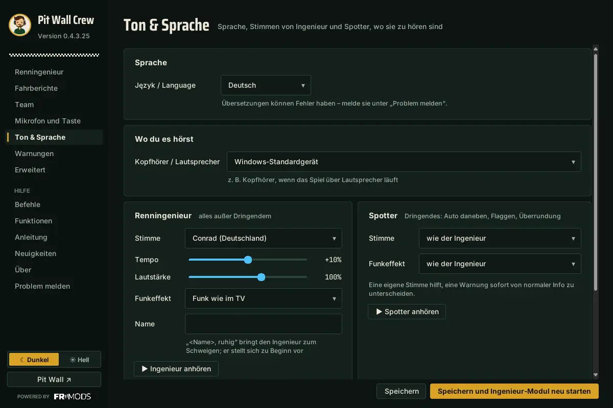
- Język / Language – ganz oben, immer auch englisch beschriftet, damit man sie leicht findet.
- Kopfhörer / Lautsprecher – das Gerät, auf dem du Ingenieur und Spotter hörst, z. B. Kopfhörer, während das Spiel auf den Lautsprechern läuft.
- Stimme des Ingenieurs, Sprechtempo, Lautstärke, Funkeffekt und Name des Ingenieurs. ▶ Anhören spielt ein Beispiel.
- Gibst du ihm einen Namen (z. B. Markus), stellt er sich vor, und „Markus, ruhig“ schaltet ihn stumm.
- Stimme des Spotters – eigene Stimme für dringende Meldungen zur Strecke (Auto daneben, Flaggen, Unfälle, Überrundungen); „wie der Ingenieur“ = eine Stimme. Funkeffekt des Spotters – getrennt vom Ingenieur (z. B. Spotter ohne Rauschen, Ingenieur über Funk). ▶ Spotter anhören spielt ein Beispiel.
- Einheiten – km/h oder mph, m oder ft, °C oder °F, l oder Gallonen, Druck wie im Spiel / bar / psi / kPa: so spricht der Ingenieur, so sind die Berichte und so zeigt die Pit Wall die Daten zuerst (jeder kann dort in ⚙ seine eigenen wählen). Sturzgrade bleiben gleich.
Warnungen
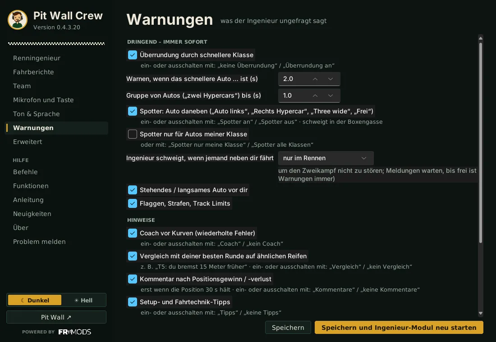
Was der Ingenieur von sich aus sagt: Überrundung durch schnellere Klassen (und ab wie vielen Sekunden), stehende Autos, Flaggen, Coaching vor Kurven, Vergleich mit deiner besten Runde, Kommentare nach Überholmanövern, Setup-Vorschläge. Coach, Vergleiche und Vorschläge starten, sobald deine Rundenzeiten gleichmäßig sind (3 saubere Runden mit ähnlicher Zeit) – nicht, während du die Strecke lernst. Ausnahme: Setup-Tipps auch beim Lernen der Strecke (oder per Stimme „Setup sofort“) – wenn das Setup so schlecht ist, dass gleichmäßige Runden schwer sind. Pause zwischen Vorschlägen – mindestens so viele Minuten zwischen Tipps. Alles lässt sich während der Fahrt per Stimme ein- und ausschalten (z. B. „kein Coach“). Reifen nach mehreren Runden noch zu kalt und Sturz fast am Minimum – der Ingenieur rät zu mehr Sturz (LMU, AC mit CSP). Nach dem Verlassen der Garage (Training, Qualifying) prüft der Ingenieur das Setup: Sturz fast am Minimum, Drücke oder Bodenfreiheit fast am Maximum – einmal pro Setup. Wie viel der Ingenieur nach einer Runde sagt – Viel (alles auf einmal), Normal (eine Bemerkung pro Runde – Standard) oder Wenig (eine Bemerkung alle 3 Runden). Setup-Tipps mit zweiter Option („x oder y“) – aus: eine Änderung auf einmal. Warnungen, Strategie und Antworten – immer sofort.
Erweitert
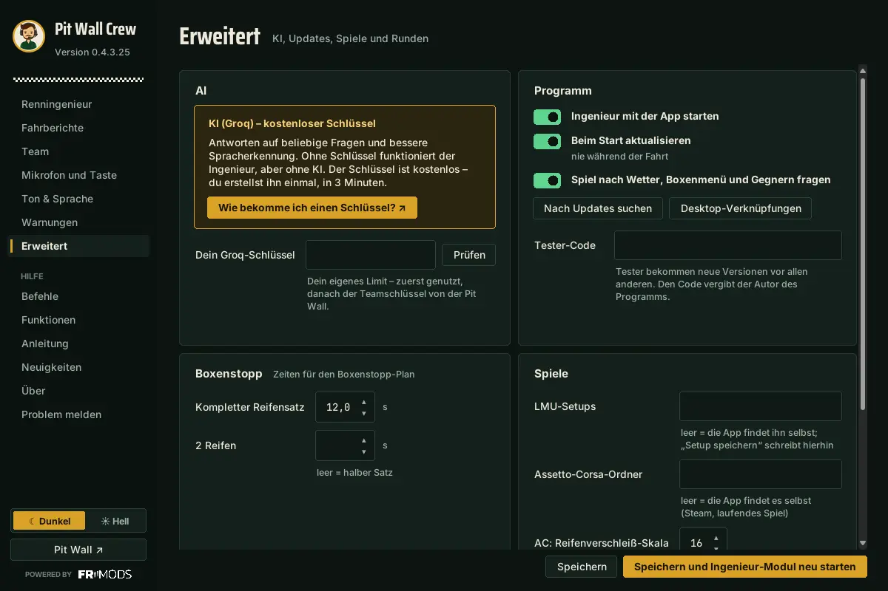
Zeit für den kompletten Reifenwechsel, automatischer Start des Ingenieurs, Desktop-Verknüpfungen, Updates und dein eigener Groq-Schlüssel (optional – eigenes Limit), Tester-Code und „Spiel nach Prognose, Boxenmenü und Gegnern fragen“. LMU-Setup-Ordner – meist leer (das Programm findet den Spielordner selbst); dorthin schreibt „Setup speichern“ das neue Setup.
Mit dem Ingenieur sprechen
Taste halten, sprechen, loslassen. Ein Tastendruck unterbricht auch, was der Ingenieur gerade sagt.
Beispiele: „wie viel Sprit?“, „wann in die Box?“, „welche Reifen wechseln wir?“, „wer ist vor mir?“, „Abstand zum Führenden?“, „wer ist direkt hinter mir?“ (nächstes Auto auf der Strecke, jede Klasse), „Unfälle?“, „wo verliere ich?“, „in welchem Sektor verliere ich am meisten?“, „wer ist auf der Strecke?“, „Wetter?“, „wann überrundet mich das erste Hypercar?“, „ruhig“ (völlige Stille bis zum nächsten Druck), „nur Dringendes“, „wiederhol“.
Die vollständige Liste steht in der App: Hilfe → Befehle.
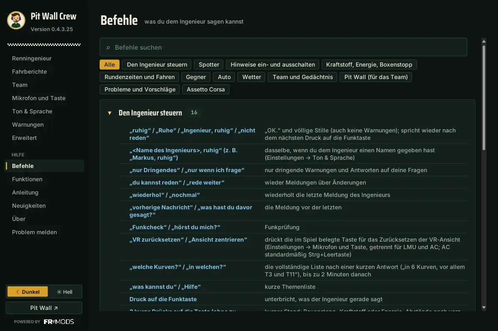
Eine Frage, die das Programm nicht kennt, geht zusammen mit den Renndaten an die KI (mit Groq-Schlüssel). Fragen zum Programm selbst („wie schalte ich die Meldungen über herankommende Prototypen aus?“, „der Spotter soll keine Seiten ansagen“) beantwortet die KI anhand dieser Anleitung und der Einstellungen: sie nennt den Befehl oder die Stelle in den Einstellungen und sagt, wenn es genau diese Option nicht gibt, welche am nächsten kommt. Einen Befehl in deinen eigenen Worten („neue Gummis rechts“, „schick Patrick aufs Handy, dass er aufstehen soll“) ordnet die KI der Liste aller Befehle zu (auch in der Demo) und das Programm führt ihn aus; beim nächsten Mal wirkt derselbe Satz sofort ohne KI („gelernte Befehle vergessen“ löscht sie). Falsch erkannte Wörter korrigiert das Programm selbst, ohne Internet, und die Namen deiner Teamkollegen und der Gegner in der Nähe bekommt die Spracherkennung als Hinweis.
- Spotter (Einstellungen → Warnungen): „Auto links“, „Rechts Hypercar“, „Three wide“ und auf welcher Seite die Autos sind, „Frei“ – immer am Ende, wenn niemand mehr neben dir ist; „nur meine Klasse“ möglich; schweigt in der Boxengasse, im Qualifying (in LMU privat) und im Rennen vor dem Start. In der Startaufstellung sagt der Ingenieur, wenn das Lenkrad mehr als 90° eingeschlagen ist. Per Stimme: „Spotter aus“ / „Spotter an“. Fährt jemand neben dir, schweigt der Ingenieur (auch bei ausgeschaltetem Spotter), damit du dich auf den Zweikampf konzentrierst – Einstellung Warnungen → Ingenieur schweigt, wenn jemand neben dir fährt: nur im Rennen (Standard), immer oder nie.
- Einschlag: ein paar Sekunden nach dem Unfall sagt der Ingenieur „Ich prüfe, ob dich das Zeit kostet“; nach zwei sauberen Runden nennt er den Verlust pro Runde, ob die Höchstgeschwindigkeit gesunken ist und ob sich die Reparatur lohnt. Kennt er die Reparaturzeit nicht, sagt er, bis zu wie vielen Sekunden sich die Reparatur lohnt (z. B. „Eine Reparatur bis 45 Sekunden lohnt sich, eine längere brich ab“) – die Reparatur lässt sich im Spiel abbrechen.
- Wie der Ingenieur spricht: von sich aus spricht er in ganzen Sätzen, jedes Mal mit etwas anderen Worten (gleicher Inhalt, ohne denselben Satz immer wieder zu wiederholen). Mehrere Meldungen auf einmal fasst er zu einer zusammen, veraltete (z. B. ein Abstand zum Gegner von vorhin) lässt er weg. Ab und zu reagiert er auf das Geschehen: deine beste Runde, zurück im Rhythmus nach einem Fehler, konstantes Fahren, ein Gegner vor dir in Angriffsreichweite. Antworten auf Fragen sind kurz und auf den Punkt.
- Kurze Drücke auf die Taste ohne zu sprechen: 1 – stoppen, 2 – kurzer Stand (Stopp, Kraftstoff oder Energie, Abstände), 3 – wiederholen, 4 – vorherige Meldung. Per Stimme: „wiederhol“, „vorherige Nachricht“.
- Eilig: mit einem Fluch in der Frage (z. B. „wie viel Sprit, Scheiße?“) antwortet der Ingenieur deutlich schneller.
- Boxenmenü per Stimme: „beim Stopp Energie 60 Prozent und rechte Reifen“, „Boxenstopp nach Strategie einstellen“. Auch „linke Reifen wechseln“, „neue Reifen“, „Soft- / Medium- / Hard-Reifen“, „30 Liter tanken“, „40 Prozent tanken“, „nicht tanken“, „bis ins Ziel tanken“; wird die Sprache falsch erkannt, ordnet die KI den Befehl zu. Ein Teamkollege kann das über die Pit Wall tun: „Ingenieur fragen“.
- Restliches Boxenmenü: „Druck vorne 2 runter“, „vorne links 140“, „Drücke nach Messung“, „Schäden reparieren“ (oder „nur Karosserie reparieren“, „alles reparieren“), „Bremsen wechseln“, „Flügel 1 hoch“, „vordere Bremskanäle schließen“, „Kühlergrill auf 3“, „beim Stopp Regenreifen“, „Fahrerwechsel auf Kamil“.
- Stopp-Vorschlag: 2 Runden vor dem Stopp (und bei Regen) fragt der Ingenieur „Ich kann den Boxenstopp einstellen: … Passt das?“ – „ja“ stellt das Boxenmenü ein.
- Stint-Zusammenfassung: nach Boxenstopp, Fahrerwechsel oder Rückkehr in die Garage (Stints ab 3 Runden) steht die volle Zusammenfassung auf der Seite Fahrberichte im Programm (Datei
recordings\stint_….txt, Kopie auf der Pit Wall): Tempo, Fehler (Ausritte, Einschläge, wiederholtes Blockieren, Durchdrehen, ABS, TC – in welchen Kurven), wo du zur besten Runde verlierst, in der Vollversion auch Grip-Ausnutzung und Setup. Während des Stints: „Stint-Zusammenfassung“. Aktueller Stint (live) in der Berichtsliste wird nach jeder sauberen Runde aktualisiert (ab 3 Runden); Bericht beenden speichert ihn als normalen Bericht (z. B. am Ende des Trainings), der Ingenieur läuft weiter. Bericht kopieren kopiert den Bericht zum Einfügen (z. B. in Discord). Die Schaltfläche Wie entsteht ein Bericht? erklärt in wenigen Schritten, woher die Daten kommen (Fehler und Kurvenverluste zählen nach 3 gleichmäßigen, sauberen Runden). - Verlauf der Setup-Änderungen: nach „ich habe … geändert“ und 3 sauberen Runden bewertet der Ingenieur die Änderung (geholfen / schlechter / unverändert) und merkt sie sich für Strecke und Auto; jeder Setup-Tipp nennt auch die Nebenwirkung. In LMU und in Assetto Corsa (mit CSP und der App im Spiel) sieht der Ingenieur die Änderung in der Garage selbst (was und um wie viele Klicks), auch ohne „ich habe geändert“. Hat eine Änderung nichts gebracht, schlägt er dieselbe Richtung stärker vor (z. B. „von 8 auf 9 hat nichts gebracht, versuch 11“); Flügel und Bodenfreiheit nur einen Klick weiter. Bringt auch das nichts, sagt er, dass das Auto auf dieser Strecke darauf nicht reagiert, und schlägt es nicht mehr vor. Bei ungleichmäßigen Zeiten bittet er um 1–2 Runden mehr. Hat eine Änderung es verschlechtert, sagt er genau, worauf du zurückgehst („Stabilisator vorne: zurück auf 10“, in AC: um wie viele Klicks). Waren die Bedingungen vor und nach der Änderung anders (wärmere Strecke, weniger Sprit, abgefahrene Reifen, andere Mischung, nasse Strecke), sagt er das und dass die Bewertung weniger sicher ist.
- Grip in Kurven (Vollversion): „Grip?“, „wo habe ich Reserve?“, „Grip T5“ – wie nah du am Reifenlimit bist (Einfahrt, Mitte, Ausfahrt; 100% = das Meiste, was du in dieser Kurve gezeigt hast) und was du dort tun kannst, wo Reserve ist. LMU und Assetto Corsa.
- Setup oder Fahrstil: bevor der Ingenieur eine Setup-Änderung vorschlägt, prüft er 4–8 saubere Runden: tritt das Problem jedes Mal auf (Auto – Setup-Tipp) oder nur bei anderer Fahrweise, z. B. schnellere Einfahrt oder früheres Gas (Fahrweise – Fahrtipp). Setup-Tipps berücksichtigen auch Bedingungen (kalte oder abgefahrene Reifen, Sprit, Streckentemperatur), Reifendrücke, die Nebenwirkung und die Art der Session; nach 3 Runden schlechter – zurückstellen.
- Setup: „Vorschläge zusammenfassen“ – alle vorgeschlagenen Änderungen auf einmal; „Setup speichern“ – neue Datei „PWC_…“ mit diesen Änderungen im Streckenordner (Original unverändert), in der Garage laden.
Assetto Corsa
Pit Wall Crew funktioniert auch mit Assetto Corsa (AC1, Steam). Es ist dasselbe Programm – derselbe Ingenieur, Spotter, Pit Wall und dieselbe Team-Datenbank; das Programm erkennt selbst, welches Spiel läuft.
- Custom Shaders Patch (CSP) – dringend empfohlen (Content Manager → Settings → Custom Shaders Patch). Mit CSP funktioniert am meisten: Regen und Pfützen (Rain FX), Boxenstopp per Stimme, Unter- und Übersteuer-Analyse in Kurven, Sektoren, Tipps zu TC und ABS. Ohne CSP läuft eine einfachere Python-App – mit weniger Funktionen.
- App im Spiel – das Programm kopiert sie selbst ins Spiel. Starte Pit Wall Crew vor Assetto Corsa; mit CSP läuft die App von selbst im Hintergrund. Ohne CSP einmal aktivieren: Content Manager → Settings → Assetto Corsa → Python apps → Pit Wall Crew anhaken.
- Spiel auf einem anderen Laufwerk – das Programm findet es selbst. Wenn nicht, trag den Spielordner (den mit
AssettoCorsa.exe) unter Einstellungen → Erweitert → Assetto Corsa: Spielordner ein. - Reifen – „noch X %“ wie in Sidekick; stell dieselbe Skala wie in Sidekick ein unter Einstellungen → Erweitert → Assetto Corsa: Reifenverschleiß-Skala. Der Ingenieur warnt etwa 3 Runden vor der „Klippe“ (plötzlicher Gripverlust). Eigene Schwelle pro Auto: „in diesem Auto wechsle ich die Reifen bei 97“ – Warnung 2 Runden vorher.
- Boxenstopp per Stimme (mit CSP) – der Ingenieur stellt das Quick-Pitstop-Menü im Spiel ein: „volltanken“, „beim Stopp Regenreifen“, „Druck vorne 18“, „keine Reparatur“. In AC wird immer der ganze Reifensatz gewechselt.
- Reifendruck, Gänge, Setup – „welchen Druck einstellen?“ nennt den Kaltdruck für die Garage (psi); im Training sagt „Vorschläge zusammenfassen“ Übersetzungsänderungen in Klicks („6. Gang um 3 Klicks länger“); „Setup speichern“ – neue Datei „PWC_…“ in der Garage (das Original bleibt unverändert).
- Abkürzen (RealPenalty) – online sagt der Ingenieur jede Verwarnung fürs Abkürzen so an, wie der Server sie zählt; „wie viele Verwarnungen habe ich?“.
- Kurvennamen der Strecke („Tosa“, „Acque Minerali“) statt T1, T2 – du kannst nach Namen fragen: „wie ist Tosa?“.
- Spotter, Gegner, Flaggen, Schäden, Strategie – wie in LMU.
- Was AC nicht hat: Fahrerwechsel (das Programm läuft immer wie im Solo-Modus – ohne Fahrzeugübergabe und Briefings), virtuelle Energie, Kühlergrill und Bremskühlung – darüber spricht der Ingenieur nicht.
- Die Pit Wall funktioniert wie in LMU. Mehrere Autos eines Teams im Rennen – jedes hat seine eigene Ansicht (Liste oben).
KI – kostenloser Groq-Schlüssel (einmal, 3 Minuten)
- Öffne console.groq.com und melde dich an – am einfachsten mit einem Google-Konto. Das Konto ist kostenlos.
- Links: API Keys → Create API Key, Namen eingeben (z. B.
PWC) → Submit. - Schlüssel sofort kopieren (beginnt mit
gsk_) – Groq zeigt ihn nur einmal. Der Schlüssel ist kostenlos, mit Tageslimit. - Team (eine Person reicht): Pit Wall → Team → Team-KI (Groq) → einfügen → Schlüssel speichern. Der Schlüssel gilt für das ganze Team, nur Teammitglieder sehen ihn.
- Solo oder eigenes Limit: App → Erweitert → Eigener Groq-Schlüssel → einfügen → Schlüssel prüfen (es soll „✓ Der Schlüssel funktioniert“ stehen) → Speichern und Ingenieur-Modul neu starten. Der Rahmen KI (Groq) über dem Feld hat die Taste Wie bekomme ich einen Schlüssel? ↗ (öffnet dieses Kapitel) und verschwindet, sobald der Schlüssel funktioniert.
- Fertig, wenn auf der Seite Renningenieur ein grünes KI: Groq steht.
Schick den Schlüssel nie in einem Chat – füge ihn selbst ein.
Updates und Patreon
- Neue Versionen bekommen zahlende FR-Mods-Unterstützer auf Patreon.
- In der App auf der Seite Renningenieur auf Mit Patreon anmelden klicken. Im Browser bei Patreon anmelden und Allow klicken, dann zurück zur App. Danach bleibt nur Von Patreon abmelden.
- Updates installieren sich beim Start der App – nie während der Fahrt. Deine Einstellungen bleiben erhalten.
- Tester geben stattdessen einen Code vom Autor ein: Erweitert → Testercode → Speichern und Ingenieur-Modul neu starten.
Ohne Patreon oder Testercode läuft das Programm weiter, nur ohne neue Versionen.
Vollversion und Demo
- Die Vollversion läuft nach der Aktivierung auf dem Computer: Die Anmeldung mit Patreon (oder ein Testercode) aktiviert sie selbst, auf höchstens 2 Computern pro Konto. Einmal aktiviert läuft sie dauerhaft, auch nach dem Ende der Unterstützung – dann ohne neue Versionen. Ein kopierter Ordner ohne Anmeldung läuft als Demo.
- Demo (kostenlos): Sprachsteuerung, Flaggen, Strafen, Track Limits, Überrundung, Sprit, Energie, wann an die Box, Zeit bis zum Ende, Rundenzeiten, Position, wer vor und hinter dir ist, Reifen, Bremsen, Schäden, Motor, Wetter, dazu der Spotter, „wo verliere ich Zeit?“ (die Kurve mit dem größten Verlust), unbegrenzte KI-Fragen (mit kostenlosem Groq-Schlüssel) und Fahrberichte mit einer Vorschau, was die Vollversion zeigen würde (Setup, Grip). Ohne Pit Wall, Team, Boxenmenü per Stimme, Strategie, Setup und volle Fahranalyse.
- Die Seite ★ Vollversion zeigt alle bezahlten Funktionen mit Screenshots des Pit Walls. Patron werden öffnet die FR-Mods-Seite auf Patreon (auch in der Leiste auf der Seite Ingenieur). Nach der Anmeldung eines Unterstützers lädt die App die Vollversion selbst – die Einstellungen bleiben.
- Ab und zu erwähnt der Ingenieur kurz die Vollversion. Abschalten unter Warnungen → Funktionen der Vollversion erwähnen oder per Stimme „keine Werbung“.
Pit Wall
Öffne sie mit der Taste Pit Wall in der App oder unter zepansrpl-creator.github.io/Pit-Wall-Crew (Anmeldung mit Teamcode und Passwort; dein Handy merkt sie sich). Die Taste in der App meldet die Pit Wall selbst an – beim Team, mit dem die App verbunden ist, auch wenn der Browser bei einem anderen Team angemeldet war. Die Sprachauswahl ist oben, die Taste ☀ / ☾ wechselt zwischen hellem und dunklem Aussehen.
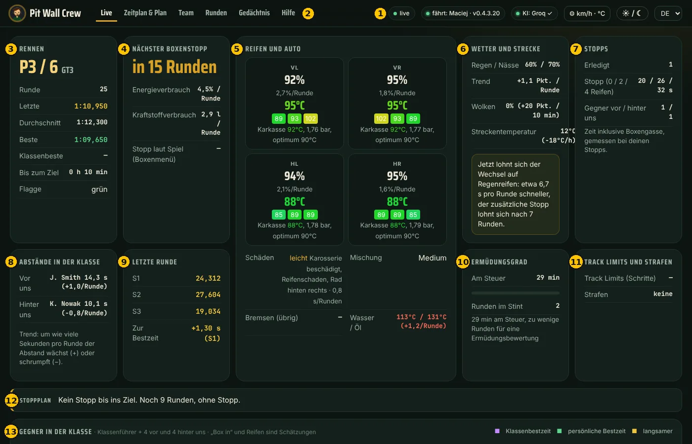
- Status: ob die Daten live sind, wer fährt, ob die KI funktioniert.
- Tabs: Live, Zeitplan & Plan, Team, Runden (oben eine Sitzungsübersicht: beste und durchschnittliche Runde, Konstanz, Kraftstoff und Energie pro Runde – für jeden Fahrer und Stint), Gedächtnis, Hilfe.
- Rennen: Position in der Klasse, Runde, Rundenzeiten, Zeit bis ins Ziel, Flagge.
- Nächster Boxenstopp: in wie vielen Runden, Energie- und Kraftstoffverbrauch, was beim Stopp passiert.
- Reifen und Auto: Verschleiß und Temperaturen jedes Reifens, Schäden, Motor, Bremsen.
- Wetter und Strecke: Regen, Nässe, Wolken, Streckentemperatur und Hinweise des Ingenieurs.
- Stopps: wie viele Stopps gemacht sind, die Stoppzeit (0 / 2 / 4 Reifen), gemessen bei euren eigenen Stopps, und wie viele Stopps die Gegner vor und hinter euch gemacht haben.
- Abstände in der Klasse: Abstand zum Auto vor und hinter dir sowie der Trend (um wie viele Sekunden pro Runde er wächst oder schrumpft).
- Letzte Runde: Sektorzeiten S1–S3 und der Rückstand auf die beste Runde.
- Ermüdungsgrad: wie lange der Fahrer schon fährt und wie viele Runden im Stint; die Ermüdung wird anhand der Rundenzeiten beurteilt.
- Track Limits und Strafen: Track-Limit-Verstöße und Strafen.
- Stoppplan: was beim nächsten Stopp zu tun ist oder ob ihr ohne Stopp ins Ziel kommt.
- Gegner in der Klasse: Abstände, Tempo, wer wen einholt, Energie, voraussichtlicher Stopp.
- Vergleich mit Teamkollegen: nach jeder sauberen Runde – in welchen Kurven und um wie viel ein Teamkollege schneller ist (seine beste Runde unter ähnlichen Bedingungen). In Assetto Corsa auch ein Kollege in einem anderen Auto derselben Klasse – dann nur wo und um wie viel, ohne Ratschläge.
- Stintplan: wer fährt, wann gewechselt wird, was beim Stopp passiert, um wie viele Minuten sich der Zeitplan gegenüber dem Plan verschoben hat. Ohne Plan für heute wird er automatisch für den aktuellen Fahrer erstellt – aus der Renndauer und den im Spiel verfügbaren Reifen.
- Aussehen: standardmäßig dunkel, Umschalter ☀/☾ oben. Farbige Zeiten: lila – Klassenbestzeit, grün – deine Bestzeit, gelb – langsamer. Die Leiste „Schäden“ unter der Karte erscheint nur bei Schäden (Fahrzeugskizze, Verlust pro Runde, Höchstgeschwindigkeit, wie lange eine Reparatur dauern darf und Empfehlung). Bei Rennen über Runden zeigt „Bis zum Ziel“ Runden (z. B. 12 / 40).
- Teamgründer: hat ein eigenes Passwort (beim Anlegen des Teams oder im Tab Team: „Gründer werden“). Nur er kann Fahrer entfernen oder umbenennen und das Teampasswort ändern; er meldet sich auf der Pit Wall mit „Ich bin der Gründer“ an.
- Mehrere Teamautos in einem Rennen: Jedes Auto hat eine eigene Ansicht (Liste oben, mit Startnummer); Nachrichten und Fragen gehen an den Fahrer des gewählten Autos. Jeder Fahrer hört seinen eigenen Ingenieur und Spotter.
- Live-Zeitplan: Stint-Leiste (Farbe = Fahrer, rotes „JETZT“). Runden: Filter (Session – jedes Rennen getrennt; Auto – wenn mehrere Teamautos fahren, jedes mit eigener Tabelle; Fahrer, Stint, nur saubere), Pace-Diagramm, farbige Zeiten und Sektoren S1–S3. Vergleichskarte: Strecke und Auto, bis zu 3 Runden aus der Liste (🟢 beste gültige Runde des Fahrers – auf der Strecke und in jeder Session; Sessions eingeklappt; Filter; Schaltfläche „🟢 Beste Runden“). In der Team-Datenbank: Runden aus 14 Tagen, beste unter Bedingungen (bis überboten oder 90 Tage) und 📌 (ohne Limit); ältere 💾 – von der Festplatte des Fahrers, wenn sein Pit Wall Crew läuft. Karte: Farbe = wer am schnellsten ist, Bremspunkte, Sektorgrenzen und -zeiten, Werte beim Überfahren, Zoom; Bedingungen (auch Gummi auf der Strecke), „wo am meisten zu holen ist“, ideale Runde, Diagramm Geschwindigkeit / Gas / Bremse / Gang und Zeitverlust; Klick auf eine Kurve – Karte neben den Kurvendetails; Setup-Unterschiede; „🔗 Link kopieren“. ⚙ Einheiten in der Kopfzeile (km/h–mph, m–ft, bar–psi–kPa, °C–°F, l–gal). Gedächtnis: Notizen als Karten mit Suche und Streckenfilter. Hilfe: Inhaltsverzeichnis.
Weiter unten sind die Streckenkarte mit allen Autos und der Teamfunk: „An den Fahrer“ (der Ingenieur liest die Nachricht vor), „Ingenieur fragen“ (Antwort per Stimme), „Fragen (nur Text)“, „Ins Gedächtnis“.
Auf dem Handy
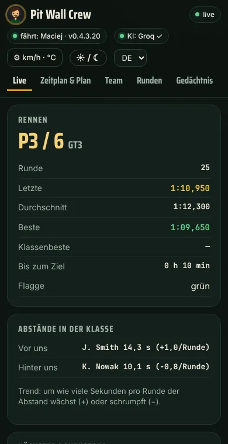
Tab Team
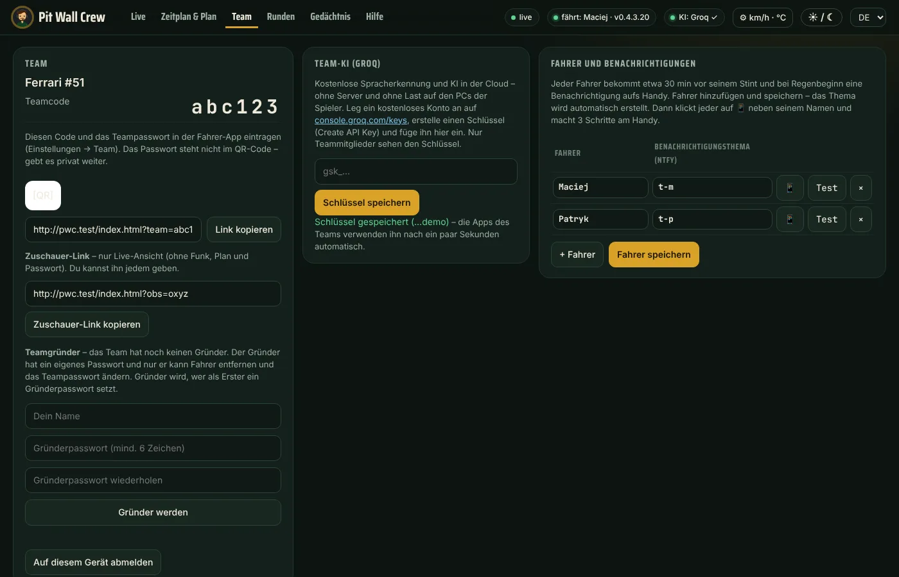
Teamcode und QR-Code für die Pit Wall, Fahrer mit Benachrichtigungsthemen, der Groq-Schlüssel und ein Zuschauer-Link –
nur Live-Ansicht, ohne Funk und Plan; den kannst du jedem geben. Fahren mehrere Autos des Teams (z. B. Assetto Corsa), wählt der Zuschauer oben aus der Liste, welches Auto er sieht (Fahrer – Auto). Die Wahl steht in der Adresse (&auto=…), so lässt sich ein Link zu einem bestimmten Auto teilen.
Zeitplan & Plan (vor einem langen Rennen, eine Person)
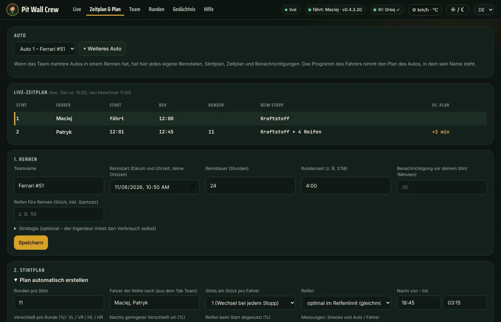
- Auto (oben): Wenn das Team mehrere Autos in einem Rennen hat, + Weiteres Auto – jedes hat eigene Renndaten, Stintplan, Zeitplan und Benachrichtigungen. Das Programm des Fahrers nimmt den Plan des Autos, in dem sein Name steht.
- 1. Rennen: Startdatum und -uhrzeit, Dauer, Rundenzeit, Reifen fürs Rennen → Speichern.
- 2. Stintplan → Plan automatisch erstellen: Runden pro Stint, Fahrerreihenfolge, Reifenverschleiß (unter Messungen Strecke und Auto sowie Fahrer wählen – Laden trägt den in euren Sessions gemessenen Verschleiß und die Zeiten des ganzen Stopps ein), Stoppzeiten, Reifen beim Start abgenutzt (%) – wenn ihr auf dem Qualifying-Satz startet → Plan erstellen. Das Programm verteilt die Reifen so, dass sie möglichst gleichmäßig verschleißen.
- Tabelle bei Bedarf anpassen: Fahrer aus der Liste, Runden, Links / Rechts = Reifen auf dieser Seite wechseln → Plan speichern. Der Zähler zeigt, ob ihr im Reifenkontingent bleibt.
Während des Rennens rechnet sich der Zeitplan nach dem echten Tempo neu. Der Ingenieur holt dich an die Box und wechselt Reifen nach Plan (außer ein Reifen hält nicht oder die Energie reicht nicht). Der Plan gilt für ein Rennen mit der unter „1. Rennen“ eingetragenen Dauer.
Handy-Benachrichtigungen (jeder Fahrer, 2 Minuten)
- Installiere die kostenlose App ntfy (Google Play / App Store).
- Auf der Pit Wall: Team → 📱 neben deinem Namen klicken – dein Thema und QR-Code erscheinen.
- In ntfy auf + tippen, Thema eingeben und Subscribe (oder QR-Code scannen).
- Auf Test neben deinem Namen klicken – „Pit Wall Crew – test“ kommt aufs Handy.
Die Benachrichtigung kommt etwa 30 Minuten vor deinem Stint, eine zweite, wenn sich der Stint um 10 Minuten oder mehr verschiebt, und wenn es zu regnen beginnt. Der Fahrer kann dem ganzen Team auch per Stimme schreiben: „schick eine Nachricht an das Team: ich komme diese Runde rein“ (oder einer Person: „Benachrichtigung Adam: …“).
Langes Rennen (z. B. 24 h)
- Der Fahrer im Auto lässt Pit Wall Crew den ganzen Stint laufen – seine App schickt die Daten an die Pit Wall und die Benachrichtigungen.
- Die anderen können Spiel, App und PC ausschalten. Nach der Handy-Benachrichtigung PC, LMU und Pit Wall Crew starten, bevor du einsteigst.
- Plan, Zeitplan, Nachrichten, Teamgedächtnis und die Übergabe liegen in der Teamdatenbank – das Programm holt sie selbst.
Probe vor dem Rennen (15 Minuten)
- Alle starten Pit Wall Crew – grünes Team und KI: Groq.
- Ein Fahrer klickt Test ohne Spiel. Die anderen öffnen die Pit Wall – die Daten sollten „live“ sein.
- Der Fahrer fragt per Stimme „wie viel Sprit?“ – alle hören die Antwort.
- „An den Fahrer“ von der Pit Wall senden – der Ingenieur liest die Nachricht vor.
Fair Share (LMU)
In Team-Events muss jeder Fahrer, der mindestens eine Runde gefahren ist, mindestens 50 % / Anzahl Fahrer der Teamrunden haben (2 Fahrer – 25 %, 3 – 16,7 %, 4 – 12,5 %, 5 – 10 %, 6 – 8,3 %), sonst bekommt das ganze Lineup kein DR/SR. Der Ingenieur zählt die Runden jedes Fahrers, erinnert beim Stopp, wem wie viele fehlen, warnt, wenn es knapp wird, und antwortet auf „Fair Share?“. Im Pit Wall – Tab Live.
Rennzusammenfassung
Im Ziel nennt der Ingenieur kurz das Ergebnis und vergleicht es mit dem Startplatz: Lob für gewonnene Plätze, Zuspruch nach verlorenen (Einschläge und Strafen werden berücksichtigt). Die volle Zusammenfassung (Ergebnis, Stopps, Fair Share, dein Tempo und deine Konstanz, Ausritte, Verbrauch) steht im Programmfenster, im Pit Wall und in recordings\podsumowanie_….txt.
Wenn etwas nicht funktioniert
| Symptom | Was tun |
|---|---|
| „Warte auf LMU“, obwohl das Spiel läuft | LMU: Settings → Gameplay → Enable Plugins = ON, dann das Spiel neu starten. |
| Der Ingenieur hört mich nicht | Mikrofon und Taste → Test 3 s. Stummschaltung am Headset und Windows → Datenschutz → Mikrofon prüfen. |
| „Falscher Teamcode oder Passwort“ | Team → korrigieren → Mit Team verbinden → Speichern. |
| Teamcode oder Passwort vergessen | Code: Tab Team auf der Pit Wall bei jemandem, der angemeldet ist (oder die Teamliste im Programm und auf der Seite). Passwort: Der Gründer kennt es und jeder, der es im Programm eingegeben hat. Ein neues Teampasswort setzt der Gründer: Pit Wall mit „Ich bin der Gründer“ → Team → Teampasswort ändern; wenn er es selbst nicht weiß – „Den Autor um ein neues Passwort bitten“ und Hilfe → Problem melden mit dem Teamcode. |
| Pit Wall: „keine Daten aus dem Spiel“ | Beim Fahrer muss die App mit grünem „Team“ laufen. |
| „KI: Groq – falscher Schlüssel“ | Schlüssel erneut einfügen (Pit Wall → Team → Team-KI). |
| Jede Meldung ist doppelt zu hören | Das Programm läuft zweimal: App schließen, „pythonw“ im Task-Manager beenden, einmal starten. |
| Keine Benachrichtigungen | Rennstart und Fahrer im Plan, Thema in ntfy, Test-Taste; die App läuft auf jemandes PC. |
| Das Spiel ruckelt | Meist zu wenig Grafikspeicher: Texturen, sichtbare Autos und Schatten reduzieren, andere Programme schließen. |
| „Der Computer wurde durch Windows geschützt“ bei der Installation | Das Installationsprogramm ist noch nicht digital signiert. Klicke auf Weitere Informationen → Trotzdem ausführen. |
| Windows 11 blockiert das Installationsprogramm ohne „Trotzdem ausführen“ | Das „Intelligente App-Steuerelement“ ist eingeschaltet und lässt Programme ohne digitale Signatur nicht zu. Man kann es abschalten (Windows-Sicherheit → App- & Browsersteuerung), aber Windows lässt es danach nicht wieder einschalten. |
| AVG oder Avast prüft das Installationsprogramm („CyberCapture“) | Der Virenschutz prüft eine neue Datei ohne digitale Signatur in der Cloud. Warte auf das Ergebnis oder klicke auf Trotzdem öffnen. |
| „Nicht verstanden“, die Stimme des Ingenieurs bricht ab, in den Meldungen steht „Dein Virenschutz (Avast/AVG) blockiert…“ | Avast/AVG blockiert die Verbindungen der App. Avast/AVG → Menü → Einstellungen → Allgemein → Ausnahmen → Ausnahme hinzufügen → Ordner Dokumente\Pit Wall Crew, dann die App neu starten. |
Problem oder Vorschlag melden
In der App: Hilfe → Problem melden, auf der Pit Wall: Tab Hilfe. Das geht direkt an den Autor. Während der Fahrt sag „Fehler melden: …“ (z. B. „Fehler melden: Spotter sagte links, aber da war keiner“) – das Programm fügt die Stelle auf der Strecke, die Runde und die letzten Meldungen des Ingenieurs hinzu; nur „Fehler melden“ – der Ingenieur fragt, was passiert ist. Mit deiner Zustimmung kann die App bei einem Absturz automatisch einen Bericht senden (ohne Sprachaufnahmen, Schlüssel und Passwörter) – das schaltest du auf derselben Seite ein oder aus. Dort schaltest du auch den anonymen Nutzerzähler ab (zufällige Installationsnummer, Version und Sprache – keine Namen und Spieldaten) und die Nutzungsstatistik der Funktionen (Funktionsnamen, Anzahl und Startzeit – nie deine Fragen) und die Sätze, die die KI Befehlen zugeordnet hat (ohne Namen – die häufigsten kommen für alle ins Programm). Updates laden nur die geänderten Dateien, wenn du die vorige Version hast. Separat schaltest du das Senden von Fragen ab, die der Ingenieur nicht verstanden hat (nur der Text, ohne Namen – der Autor ergänzt fehlende Befehle). Details: Datenschutz.
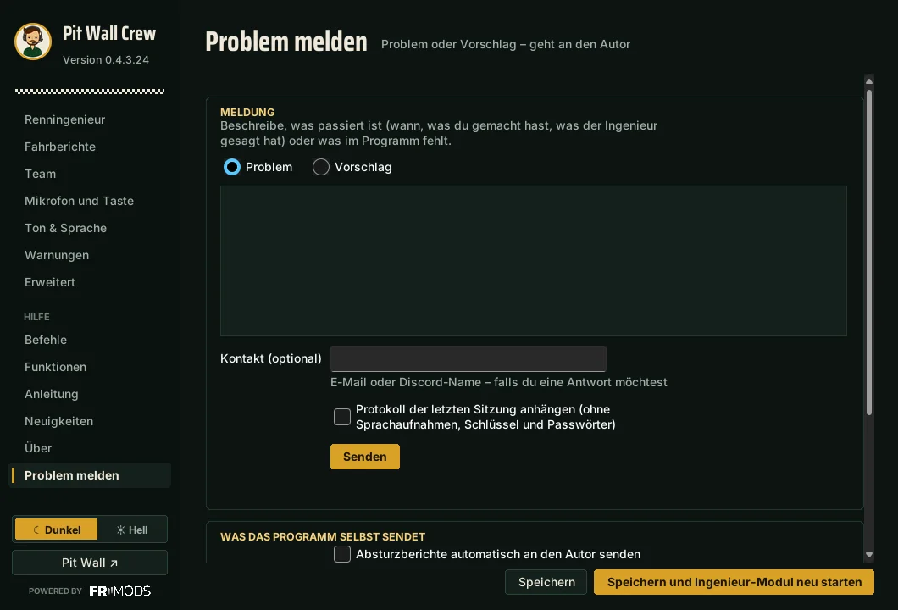